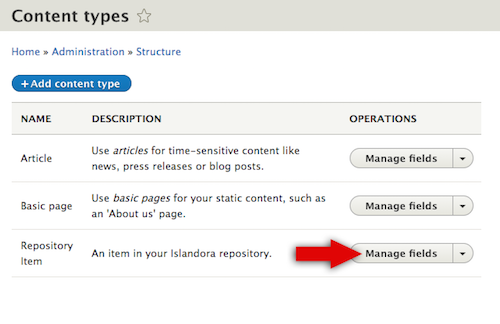
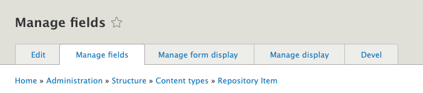
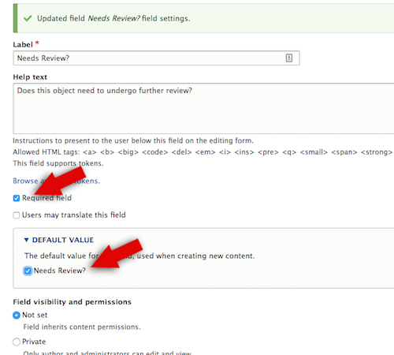
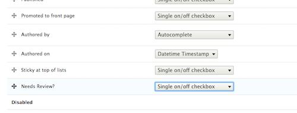
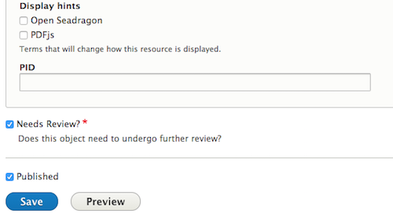
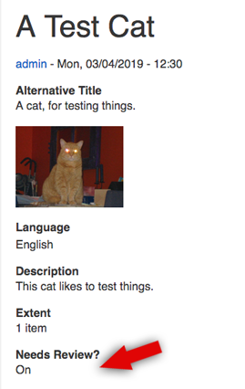

Creating and updating content types¶
Overview¶
Since metadata in Islandora is stored as fields in Nodes, the standard Drupal Content Types system provides our 'ingest forms'. For more information about Content Types in general, please see Content Types in Drupal. If you are already familiar with Drupal Field UI, you’re already well-equipped to create and modify your own ingest forms in Islandora.
This page will address how to create and modify ingest forms by editing fields and form display settings on Content Types via the graphical user interface (GUI). This page will also cover editing the RDF mapping to accommodate changes to fields.
Islandora forms are Drupal forms, and for help working with forms via the API, please check out the Further Reading section for links to more advanced Drupal documentation.
Before you start¶
- The following How-To assumes that you are using the (optional) Islandora Starter Site configuration. This configuration is deployed automatically if you build your Islandora site using the Ansible Playbook, ISLE with Docker-Compose, or are using the sandbox or a Virtual Machine Image
- This How-To assumes familiarity with Drupal terms such as Node, Content Type, and Media.
How to modify a Content Type¶
If you have deployed your Islandora with the Islandora Starter Site configuration, you will already have a Repository Item content type available, with pre-configured fields and repository behaviours.
- In the Admin menu, go to Structure >> Content Types and find the Repository Item content type.
- Select Manage Fields.

There are multiple tabs with different options to configure your Content Type:

- Manage Fields: A list of the fields available in this form. This is where you can add new fields and make adjustments to existing fields, such as whether the field has access restrictions or is required.
- Manage form display: Set the order in which fields appear in a form, including nesting; set how the user will enter data into a field (i.e., text field, drop-down list, radio buttons, etc.); set fields to be hidden in the form.
- Manage display: Set how the data stored in the fields will be displayed on the Node. Custom display settings can be set for different "view modes." For instance, a different view mode is applied for items using the OpenSeadragon viewer, which includes a field that displays the Media in OpenSeadragon instead of the standard Drupal image viewer.
Changes not displaying?
If you make changes under Manage display and don't see them reflected in your Node, double check that you have edited the right view mode
- Devel: This tab is generated by an optional module that is useful for development and troubleshooting; it can be ignored in this How-To. For more information, see Devel.
Add a field¶
This example adds a new field where a user can indicate if the repository item needs to be reviewed:
- Click Add Field
- In some cases an existing field may be available to use instead of creating a new one. The dropdown box labeled Re-use an existing field has a list of available fields. For this example we will create a brand-new field. Since the example field is a “yes/no” decision (whether the item needs review or not), choose "Boolean" from the dropdown menu and give the Label field a name. See the list of Drupal 8 FieldTypes, FieldWidgets, and FieldFormatters for descriptions of the different types available by default. Additional modules, such as the controlled_access_terms module, can provide their own Field types to choose from as well.
- Click Save and continue.
- Next, configure how the field is stored in the Drupal database. For this field type you can select how many values will be allowed. The default settings, "Limited" in the dropdown box and "1" for the allowed number of values works for our example.
- Click Save field settings.
- Configure how the field is described (including its display label and the help text for when it appears on a form) and constraints on its use. In this screenshot, the field will be required for this Content Type, and will be set to “on” by default. In the Default Value section, click the checkbox next to Needs Review to indicate all new repository items need review by default.
- Click Save settings.

The new field has been added:

It appears in the ingest form when creating a new repository object. To test this, go to Content >> Add content >> Repository item:

RDF Mappings
New fields, except for Typed Relation fields, are not automatically indexed in Fedora and the triple-store. Update the Content Type's RDF Mapping to enable indexing the field (see below).
Search
New fields will not automatically be searchable. They need to be added to the Solr index configuration. See the 'Setup and Configure Search' page for more information.
Context
To add new behavior based on the results of this new field, check out Context.
Change the form display¶
To change where in the form a field is displayed, go to the Admin menu, return to Structure >> Content Types, and find the Repository Item content type again. Select Manage form display from the dropdown menu or select the Manage form display tab.
- All the fields in this content type are available, in a list, with a simple drag-and-place UI. Drag the new field to the top of the form. You can also change the way the Boolean options are displayed, with radio buttons as opposed to a single checkbox. Different display options will be available from the dropdown menu depending on field type. For more information, please check out List of Drupal 8 FieldTypes, FieldWidgets, and FieldFormatters
- Click Save.
When creating a new Repository Item, the new field appears at the top, as a set of radio buttons.
Change the content display¶
Finally, change how the results of this example field are displayed. Initially the new field shows up at the bottom of repository object pages:

In the Admin menu, return to Structure >> Content Types and find the Repository Item content type again. Select Manage display from the dropdown menu or select the Manage display tab.
- Find the new field. You can change how the field title or label is displayed.
- Click the dropdown menu to choose from inline/above/hidden/visually hidden.
- You can also replace the options displayed with variations on a binary choice. Click the gear to choose from the following: On/Off, Yes/No, Enabled/Disabled, 1/0, checkmark/X, or hide the field completely.
- You can also drag the field into the Disabled section so that neither its label nor its contents appear in the display, although the field is saved on the Node.
- Drag the field to "Disabled" and save.
- The contents of the field are no longer displayed on the Node, but it is available when editing the node.
Create a Content Type¶
To create your own custom content type from scratch, please refer to this guide on Drupal.org.
Your custom content types can contain whatever fields you like, but there are two mandatory fields that all Islandora content types should contain:
-
In order for a custom content type to be considered an Islandora Object, it needs to have the field "Member of" ('field_member_of'). This allows it to be included in contexts that have the "Node is an Islandora node" condition. Nodes that have this field will automatically be synced to Fedora and indexed by the triple store if you are using the context provided by the Islandora Starter Site. Having this field present in your content type also gives you tabs for adding children and media when viewing an item of that content type.
-
The other mandatory field is "Model" ('field_model'). This is used in several of the contexts that the Islandora Starter Site provides. This field determines how Islandora objects are displayed, and how media derivatives are created.
Updating and creating an RDF Mapping¶
RDF mapping aligns Drupal fields with RDF ontology properties. For example, the title field of a content model can be mapped to dcterms:title and/or schema:title. In Islandora, triples expressed by these mappings get synced to Fedora and indexed in the Blazegraph triplestore. RDF mappings are defined/stored in Drupal as a YAML file (to learn more about YAML, there are several tutorials on the web. Currently, Drupal 8 does not have a UI to create/update RDF mappings to ontologies other than Schema.org. This requires repository managers to update the configuration files themselves. Consider using the RDF mappings included in the Islandora Starter Site as templates by copying and modifying one to meet your needs.
The Drupal 8 Configuration Synchronization export (e.g. http://localhost:8000/admin/config/development/configuration/single/export) and import (e.g. http://localhost:8000/admin/config/development/configuration/single/import) can be used to get a copy of the mappings for editing in a text editor before being uploaded again. Alternatively, a repository manager can update the configuration on the server and use Features to import the edits.
An RDF mapping configuration file has two main areas: the mapping's metadata and the mapping itself. Most of the mapping's metadata should be left alone unless you are creating a brand-new mapping for a new Content Type or Taxonomy Vocabulary. A partial example from islandora_default's islandora_object (Repository Item) is included below:
langcode: en
status: true
dependencies:
config:
- node.type.islandora_object
enforced:
module:
- islandora_demo
module:
- node
id: node.islandora_object
targetEntityType: node
bundle: islandora_object
types:
- 'pcdm:Object'
fieldMappings:
title:
properties:
- 'dc:title'
field_alternative_title:
properties:
- 'dc:alternative'
field_edtf_date:
properties:
- 'dc:date'
datatype_callback:
callable: 'Drupal\controlled_access_terms\EDTFConverter::dateIso8601Value'
field_description:
properties:
- 'dc:description'
The required mapping metadata fields when creating a brand-new mapping include the id, status, targetEntityType, and bundle. (uuid and _core, not seen in the example above but may be present in exported copies, will be added by Drupal automatically.) bundle is the machine name for the Content Type or Taxonomy Vocabulary you are creating the mapping for. targetEntityType is node for Content Types or taxonomy_term for Taxonomy Vocabularies. The id configuration is a concatenation of target entity type and bundle ('node' and 'islandora_object' in the example above). The id is also used to name the configuration file: e.g. rdf.mapping.node.islandora_object.yml is rdf.mapping. plus the id (node.islandora_object) and then .yml.
The mapping itself consists of the types' and fieldMappings configurations.
All the mappings use RDF namespaces instead of fully-qualified URIs. For example, the type for islandora_object is entered in the RDF config as pcdm:Object instead of http://pcdm.org/models#Object. The available namespaces are defined in module hooks (hook_rdf_namespaces) but can also be entered manually in a configuration interface. Repository managers wanting to add additional namespaces need to go to Configuration > Search and Metadata > JSONLD and enter their desired namespaces in the "Additional RDF Namespaces" box.
Namespaces currently supported (ordered by the module that supplies them) include:
- rdf
- content: http://purl.org/rss/1.0/modules/content/
- dc: http://purl.org/dc/terms/
- foaf: http://xmlns.com/foaf/0.1/
- og: http://ogp.me/ns#
- rdfs: http://www.w3.org/2000/01/rdf-schema#
- schema: http://schema.org/
- sioc: http://rdfs.org/sioc/ns#
- sioct: http://rdfs.org/sioc/types#
- skos: http://www.w3.org/2004/02/skos/core#
- xsd: http://www.w3.org/2001/XMLSchema#
- islandora
- ldp: http://www.w3.org/ns/ldp#
- dc11: http://purl.org/dc/elements/1.1/
- nfo: http://www.semanticdesktop.org/ontologies/2007/03/22/nfo/v1.1/
- ebucore: http://www.ebu.ch/metadata/ontologies/ebucore/ebucore#
- fedora: http://fedora.info/definitions/v4/repository#
- owl: http://www.w3.org/2002/07/owl#
- ore: http://www.openarchives.org/ore/terms/
- rdf: http://www.w3.org/1999/02/22-rdf-syntax-ns#
- islandora: http://islandora.ca
- pcdm: http://pcdm.org/models#
- use: http://pcdm.org/use#
- iana: http://www.iana.org/assignments/relation/
- islandora-starter-site
- relators: http://id.loc.gov/vocabulary/relators/
- controlled_access_terms
The types corresponds to the rdf:type predicate (which corresponds to JSON-LD's @type) and can have multiple values. This type value will be applied to every node or taxonomy term using the mapped content type or vocabulary.
In some cases a repository may want a node or taxonomy term's rdf:type to be configurable. For example, the Corporate Body Vocabulary (provided by the Controlled Access Terms Default Configuration module) has schema:Organization set as the default type in the RDF mapping. However, more granular types may apply to one organization and not another, such as schema:GovernmentOrganization or schema:Corporation. The alter_jsonld_type Context reaction allows Content Types and Taxonomy Vocabularies to add a field's values as rdf:types to its JSON-LD serialization (the format used to index a node or taxonomy term in Fedora and the triple-store).
fieldMappings specifies the fields to be included, their RDF property mappings, and any necessary data converters (the datatype_callback). One field can be mapped to more than one RDF property by adding them to the field's properties list. The datatype_callback is defined by the 'callable' key and the fully qualified static method used to convert it to the desired data format. For example, fields of the Drupal datetime type need to be converted to ISO 8601 values, so we use the Drupal\rdf\CommonDataConverter::dateIso8601Value function to perform the conversion.
Islandora Quick Lessons
Learn more with this video on Customizing a Form.